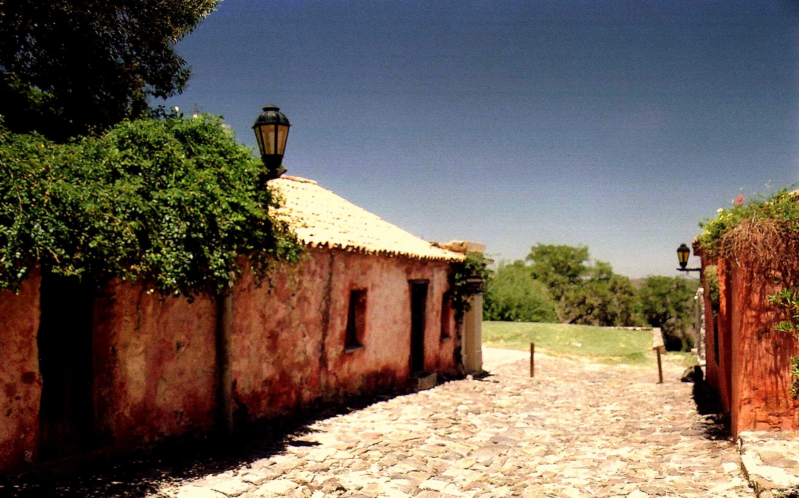
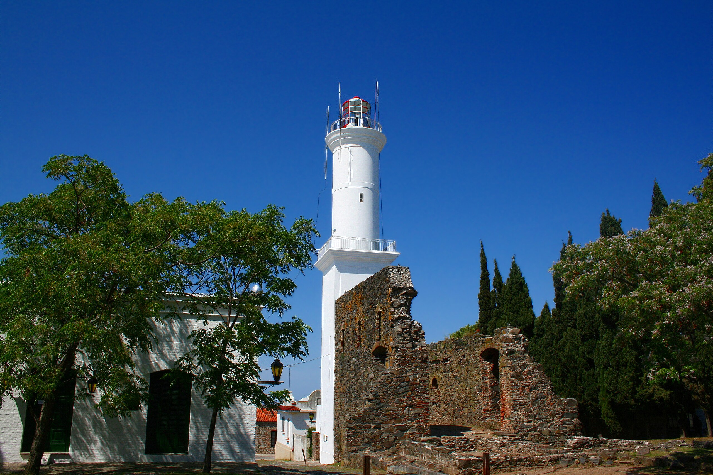

Colonia del Sacramento 🇺🇾
En Colonia del Sacramento descubrí un destino tranquilo y lleno de historia. Sus calles empedradas y casas de colores te envuelven en una atmósfera única.
Subí al faro para ver la ciudad y el Río de la Plata extendiéndose hasta el horizonte. Es el lugar perfecto para desconectarse y disfrutar la calma de este pueblo uruguayo. Eso si, no es particularmente barato para un argentino.